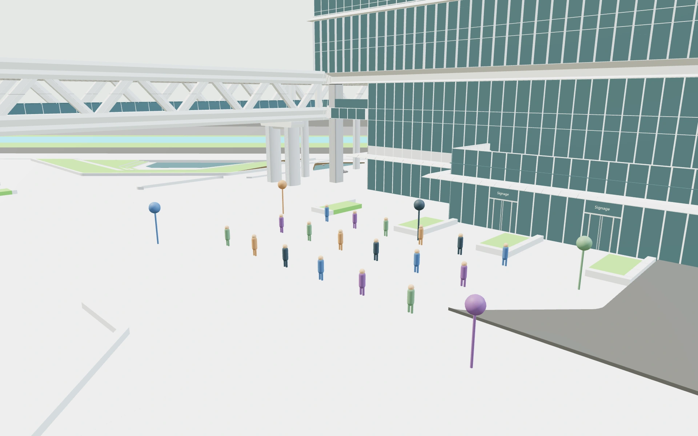
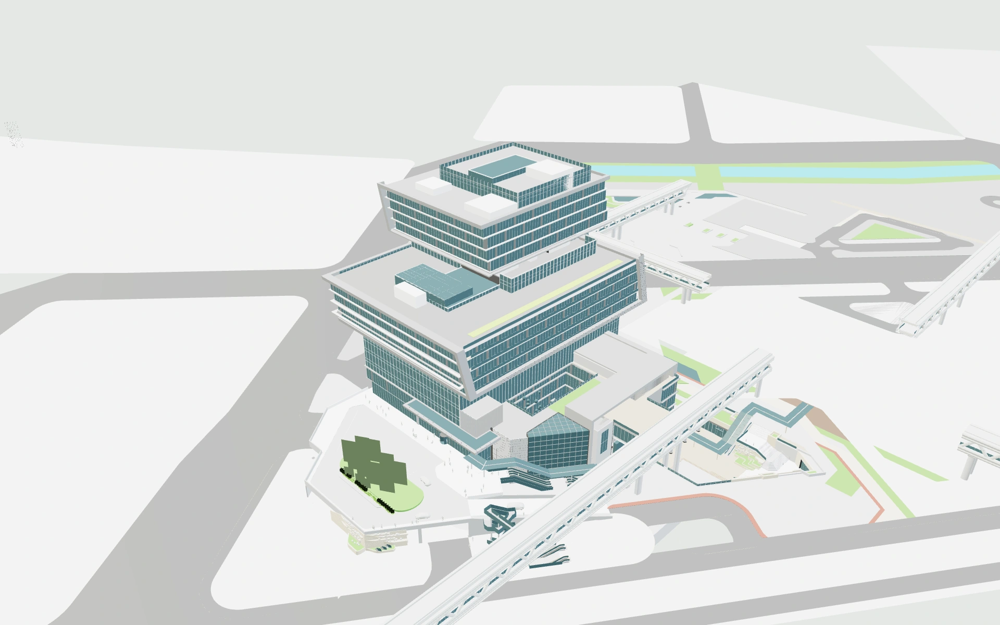
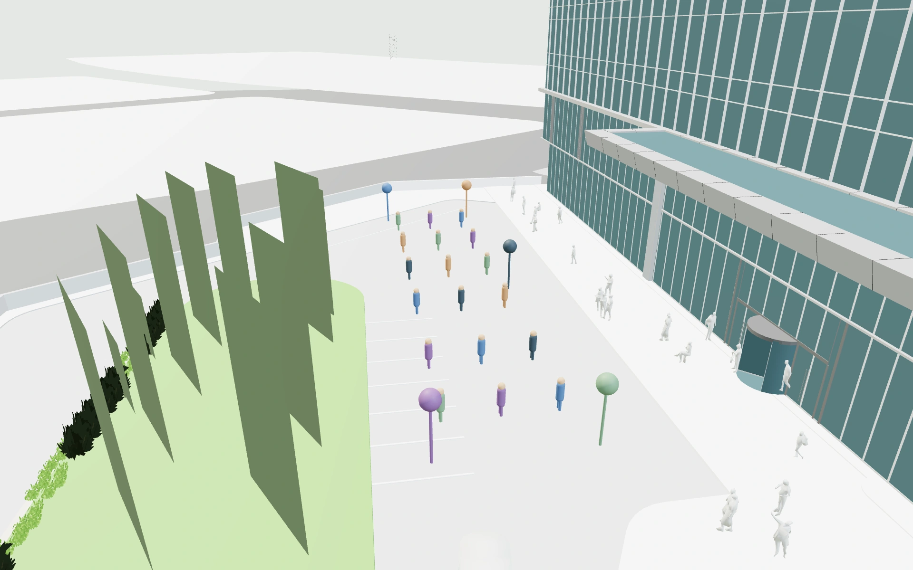
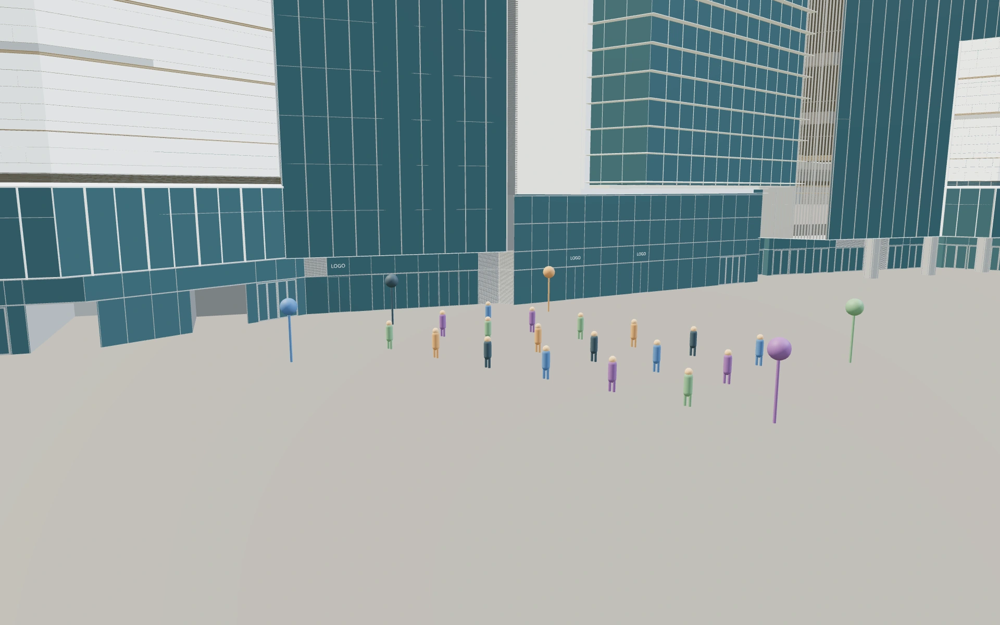

E ECHO CAMPUSPARTNER SCENE PREVIEWREAL PLACE · SHARED EXPERIENCE
从真实场地，
走进共同的线上空间。
把活动举办地带到浏览器里，让每位参与者拥有一个可进入、可相遇、可留下足迹的数字空间。

真实建筑文件转换 · 浏览器实时渲染截图当前预览：C 原场地
01 / SOURCE MODELAB 塔楼方案
三栋塔楼、裙房与周边交通背景
02 / SOURCE MODELAB 雨棚方案
层叠办公楼、入口平台与雨棚
03 / SOURCE MODELC 原场地方案
水平展开的白色裙房与中庭
这次提供三种可切换的真实模型预览。先确认场地与观感，再共同确定活动区域、参与者入口与线下互动方式。
01 / ORIGINAL GEOMETRY
AB 塔楼方案
以高层建筑群为视觉主角，适合展示场地的整体轮廓、建筑之间的关系与地标感。

源文件：20231226_T1-3塔楼调整.skp实际 WebGL 预览 · 未替换为占位建筑

入口活动比例预览。彩色人物与标记用于位置校准。
源模型活动布置- 原始方案中的塔楼与连接结构
- 源几何预览 / 活动点位叠加可切换
- 约 3.9 MB 网页模型
在线查看
打开建筑总览 ↗ 打开活动近景 ↗
https://capture.meetmind.online/echo-campus/?venue=venue-ab-towers
文件标签“AB”来自原始资料。尚未据此判定其对应 A 或 B 地块。
E ECHO CAMPUSARRIVAL & CANOPY02 / ORIGINAL GEOMETRY
AB 雨棚方案
以错动堆叠的办公楼和入口平台为主角，适合从建筑总览切入近景活动，表现人在真实场地中的尺度。

源文件：0801-T6雨棚模型-2017版本.skp实际 WebGL 预览 · 未替换为占位建筑

入口活动比例预览。彩色人物与标记用于位置校准。
源模型活动布置- 保留真实主楼、廊桥和入口结构
- 活动人物落在约 6.30 米高的平台
- 约 15.0 MB 网页模型
在线查看
打开建筑总览 ↗ 打开活动近景 ↗
https://capture.meetmind.online/echo-campus/?venue=venue-ab-canopy
原文件中的绿化部分是缺少位图贴图的矩形板。本次保留来源几何，未将它伪装成完成的景观美术。
E ECHO CAMPUSPODIUM & COURTYARD03 / ORIGINAL GEOMETRY
C 原场地方案
以白色水平线条、玻璃立面和中庭为主角，适合更舒展的场地导览、入口聚集和交流区域呈现。
源文件：0831 Podium.3dm实际 WebGL 预览 · 未替换为占位建筑

入口活动比例预览。彩色人物与标记用于位置校准。
源模型活动布置- 使用 Rhino 保存的真实渲染网格
- 入口活动区与原场地同比例标定
- 约 4.0 MB 网页模型
在线查看
打开建筑总览 ↗ 打开活动近景 ↗
https://capture.meetmind.online/echo-campus/?venue=venue-c
当前为源材质颜色与网页玻璃预览，原始位图贴图尚未恢复。
E ECHO CAMPUSNEXT · EVENT EXPERIENCEFROM SCENE TO PARTICIPATION
一个入口，两层体验。
场地是共同的空间；人物、点位与相遇是活动的内容。建筑确认后，互动层可以随活动安排调整。
| 预览方式 | 现在可以看什么 |
|---|
| 源模型 | 查看真实建筑、入口、廊桥、裙房与整体尺度，不显示额外的演示人物或互动点。 |
| 活动布置 | 在校准过的区域叠加 18 个示意人物与 5 个互动点，观察线下场地如何承载线上活动。 |
建议共同确认的参与流程
上述流程是合作设计方向。NFC 标签类型、手机兼容性、读写方式和支付宝生态接口仍需与硬件及平台方联调；当前模型预览不代表这些现场环节已完成验证。
还需要场地方确认
最终使用哪一版建筑；各文件是否属于同一总平，以及准确的位置关系；活动入口、允许通行范围与五个互动点的实际落位。
预览与交付边界
原始 SKP / 3DM 受保护。当前未恢复位图贴图，部分绿化显示为矩形板；移动尺寸预览是浏览器仿真，尚未作为手机实机验收。
两种 AB 方案是源文件版本标签，尚不能等同于已确认的 A、B 地块。三个预览也不自动构成已核对组合关系的总场地。